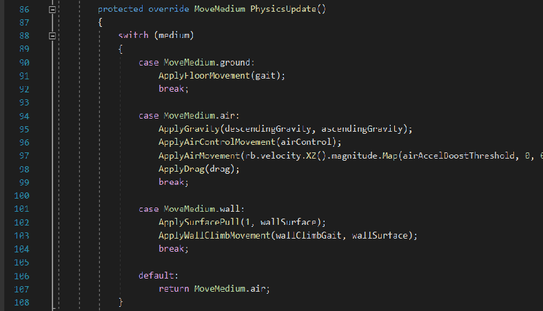

I developed a Unity Package (a plugin) that handles character movement states such as walking, falling, jumping, etc. I implemented a state machine that checks conditions determined by the developer to decide the movement mode.
To make the process of creating character movement more fun, I also included various movement logic, such as walking, wall running etc. Many physics forces such as gravity and drag are also implemented. The package is a a plug-and-play experience, simply calling these included functions in the physics update will handle the character movement.
Demonstration of the project in my YouTube channel.
Control the character yourself! (Hit ESC to gain back mouse control.)
Developed on Unity Engine using C#.